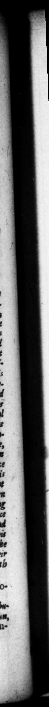

148 in quam undique conquiſiti puellarum & exoletorum greges mo ique concubitus repertores, quus ſpintrias appellabat, triplici ſerie connexi invicem inceſtarent ſe co. "ram iplo, ut adſpectu deActenres libidines excitarer. Cubicula plurifariam diſpoſita tabellis ac ſigillis laſciviſũimarum picturarum & tiguzum adornavit, libriſque Eiephantidis inſtruxit: ne cut in opera eden.'a exemplar impetratee ſcheniz de. eſſet. In lilvis quoque ac nemoribus paſſim Venercos locos commentus eſt , proſtanteſque per antra & cavas rupes ex urriuſque ſexus pube, PaC. 8 UE T. T RANG. tert ai ned companys of girls and Tuſty catamites, and the deviſers of # man, ſtrots kind of copulation, whom be tal. led 2 — | — cw in his preſence, to infiame © wid petite by the igt. He "had 2 chambers 4 a with piftwes and ſtatues in the moſt laſeivious' poſtures, and fun'(b'd with the books of Elephmtis ; that none might want s Patten for the execution of any lewd projet be was put upon. He likernſe contrived in woods and groves conveniencies for the like luſtjul enjoyments ; where youh of both ſex:s proftituted themſelves 1n caves and hollow rocks, in the ail guiſe of Pans and Nymphs. $80 that be was openly and commonly called, in allsfron to the name of the iſland, Gt prineus. niſcorum & Nympbarum hahim : palamque jam & yulgato nomute inlulæ abutentes, Caprineum dictabant. „44. Majore adhuc & turpiore infamia flagravit e vix ut refęrri audirive, nedumcredi fas fit. Quaſi pueros prim2 tenerimdinis, quos pilciculos vocabat, inſtitueret, ut natanti ſibi inter femina verſarentur, ac luderent : lingua morſuque ſenſim appetentes, Atque etiam qual infantes Armiores, nec dum tamen lacte depulſos, inguini cen papillæ admoveret: pronior lane ad id genus libidinis & Natvia & tate. Quare Parrhaſii quoque tabulam, in qua Meleagro Atalanta ore morigeratur, legatam ſibi ful conditione, ut ſi argumento offenderetur, decics pro ea HS. acciperet: non modo prætulit icd & in cubiculo delicavir, Fertur etiam in facriticando quondam captus facie miniſtri acerram preferentis, nequiſſe abſtinere, quin pxne vix dum re divina peracta, ibidem ſtatim ſeductum conſtupraret, ſimulque fratrem eins tiLicinem : atque mrique mox, 44. But he was ſtil more infamou for an abominat ion not fit to be men. tioned, or heard, much leſs credited , as that he inured little boys, whom he called little fiſbes, to play e:wix7 bis thighs as he was ſwimmmng . + . and mace uſe of luſty infants, not yet v eaned, for , being perhats more diſpoſed for that kind of unpurity from his natural temper and age together. Wherefore when 4 picture done by the hand of Parrhaſins, uh rein Atalanta wa rereented as acting a mf} unnatural piece of compaiſan:e to Meleager, was It kim for a legacy, with this preiſo, that if he di i not like the piece, h: might receive in lieu of it 4 milis of ſe lerces, he net on gave preference io the picture but hung it wp in bed-chamber. H: ig reported too once a ſacrifice, to have been ſo much tak with the face 7 4 youth attending with a cenſer, that before the ſervice was wu. U over, he took kim aſide and abuſed him, as 22 . 2 that play d at the Jacr ſice flute, — ſoon after broke both thei lig, for upbraiding ene another unh their ſhame. itium exproquod mutuo flagitium brabant, crura fregiile, 45. Faminarum quoque, & 45. How much he oa guilty of alquidem illuſtnium capuibus fing in 4 moſt mat ural ws, 1
